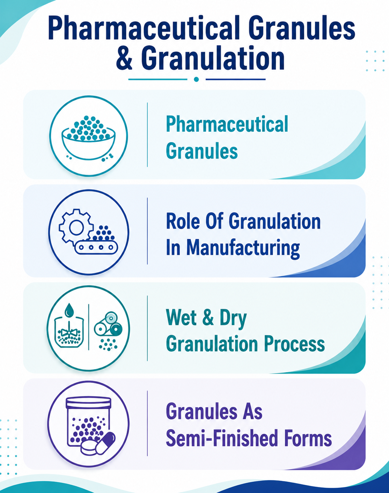

Pharmaceutical Granules: Processes, Types, and Manufacturing Considerations
21 August 2026

Pharmaceutical Granules and Their Role in Drug Manufacturing
Pharma granules are agglomerated particles produced from powders during pharmaceutical manufacturing. Granules are commonly prepared by combining an active pharmaceutical ingredient (API) with suitable excipients and processing the mixture to obtain particles with defined physical characteristics. Depending on the formulation and intended application, drug granules may be used for tablet compression, capsule filling, or as granule-based oral dosage forms.
In many manufacturing processes, pharma granules can be considered semi finished dosage forms because they represent an intermediate material that undergoes further processing before becoming the final pharmaceutical product.
The properties of drug granules can vary according to the formulation composition, equipment, process conditions, and manufacturing method. Therefore, the selection of an appropriate process generally depends on the characteristics of the API and excipients and the requirements of the final product.
Granulation in Pharmaceutical Manufacturing
Granulation is the process through which smaller powder particles are converted into larger agglomerates. The process may modify properties such as particle size, density, flow, compressibility, and handling characteristics. For this reason, granulation is widely used in the manufacture of solid oral dosage forms.
The main purpose of granulation is to produce a material with physical characteristics that may be more suitable for subsequent processing than the original powder blend. Fine powders can sometimes present challenges related to flow, segregation, dust generation, or compressibility. Granulation may help modify these characteristics.
During pharmaceutical manufacturing, pharma granules can be produced using different approaches. The two principal techniques are wet granulation and dry granulation. Although both granulation methods produce larger agglomerated particles, their mechanisms and processing requirements are different.
The choice between wet granulation and dry granulation is formulation-specific. Factors such as moisture sensitivity, thermal sensitivity, powder flow, compressibility, API properties, equipment availability, and desired granule characteristics may be considered during process development.
Wet Granulation Process
Wet granulation involves the addition of a granulating liquid to a powder mixture. The liquid promotes adhesion between particles and facilitates the formation of agglomerates. A binder may be incorporated into the formulation or introduced through the granulating liquid.
A typical wet granulation process may include dispensing, sieving, dry mixing, addition of granulating liquid, wet massing, wet sizing, drying, dry milling, and final blending. After wet granulation, the wet mass is generally dried to achieve an appropriate moisture level.
Drying conditions can influence the physical characteristics of the resulting drug granules and may also be relevant to the stability and subsequent processing of the formulation. High-shear granulators and fluid-bed processing equipment can be used for wet granulation, depending on the formulation and manufacturing strategy.
Dry Granulation Process
Dry granulation forms granules without using a liquid granulating medium. Instead, powders are compacted using mechanical force and subsequently reduced to an appropriate particle size.
Two established approaches to dry granulation are slugging and roller compaction. In roller compaction, powder is compressed between rotating rolls to form ribbons or compacted sheets. These compacts are then milled and screened to produce granules.
Dry granulation may be considered for formulations where exposure to moisture or a drying step is undesirable. Dry granulation can also be useful when the formulation has suitable compaction characteristics.
Compared with wet granulation, dry granulation eliminates the need for liquid addition and subsequent drying. However, it has its own process considerations, including ribbon density, compactibility, granule size distribution, and the potential generation of fines.
Wet Granulation and Dry Granulation in Process Selection
Both wet granulation and dry granulation can be suitable for pharmaceutical formulations, but neither method is universally applicable. The selection of the granulation process generally depends on the properties of the materials and the requirements of the manufacturing process.
Wet granulation may be suitable when improved powder handling or binding characteristics are required and the formulation can tolerate the granulating liquid and drying conditions.
Dry granulation, on the other hand, may be considered where avoiding liquid exposure or thermal drying is important.
The selection of wet granulation or dry granulation can also influence the characteristics of the resulting drug granules. Particle-size distribution, density, porosity, moisture content, and mechanical strength may differ depending on the process used.
Consequently, pharmaceutical manufacturers may evaluate the behavior of granules during downstream operations such as blending, compression, or filling before selecting the final manufacturing approach.
Role of Excipients in Pharmaceutical Granulation
Excipients can play an important role in granulation. Depending on their function, they may influence particle adhesion, flow, compressibility, disintegration, lubrication, and other formulation characteristics.
Binders are particularly relevant to wet granulation because they can promote adhesion between powder particles and contribute to granule formation. Common pharmaceutical excipient categories used in granulation include binders, fillers, disintegrants, lubricants, glidants, and surfactants.
The selection of excipients for drug granules depends on the API, dosage form, manufacturing process, and desired product characteristics. Some pharmaceutical excipients may be incorporated during the initial granulation step, while others may be added during final blending.
Granulation Equipment and Process Development
Different equipment can be used for granulation, depending on the selected process and scale. High-shear granulators, fluid-bed granulators, roller compactors, mills, and sieving equipment may form part of a manufacturing process.
In wet granulation, equipment selection can influence mixing, liquid distribution, agglomeration, and drying. In dry granulation, compaction and milling equipment can influence the characteristics of the resulting material.
Process development may involve evaluating parameters such as mixing time, granulating liquid quantity, impeller speed, drying conditions, compaction pressure, milling conditions, and screen size. The relevant parameters depend on the selected technology and formulation.
A consistent manufacturing process can be particularly important when pharma granules are produced at different scales. Scale-up may require assessment of equipment differences, process dynamics, material properties, and critical process parameters.
Granules as Semi Finished Dosage Forms
In pharmaceutical manufacturing, granules can serve as important intermediate materials. As semi finished dosage forms, granules may undergo additional blending, lubrication, compression, encapsulation, coating, or packaging depending on the intended final product.
The use of semi finished dosage forms allows manufacturers to manage pharmaceutical production as a sequence of controlled operations. The characteristics of drug granules produced at one stage can therefore become relevant to the next stage.
For example, granules intended for tablet compression may require suitable flow and compressibility, while granules intended for direct filling may require an appropriate particle-size distribution and bulk density.
Conclusion
Granulation remains an important technology in pharmaceutical solid dosage manufacturing. Both wet granulation and dry granulation provide established approaches for converting powders into larger agglomerated particles with characteristics suitable for further processing.
As semi finished dosage forms, drug granules can serve as an important link between formulation development and final dosage-form manufacturing. Appropriate understanding and control of granulation processes can therefore support consistent downstream processing and product development.
For pharmaceutical manufacturers, the development of pharma granules is not limited to producing larger particles. It involves understanding the relationship between formulation components, process conditions, equipment, and the characteristics required for the final product.
Understanding the relationship between granulation conditions and the properties of pharma granules can therefore support the development of suitable manufacturing processes.